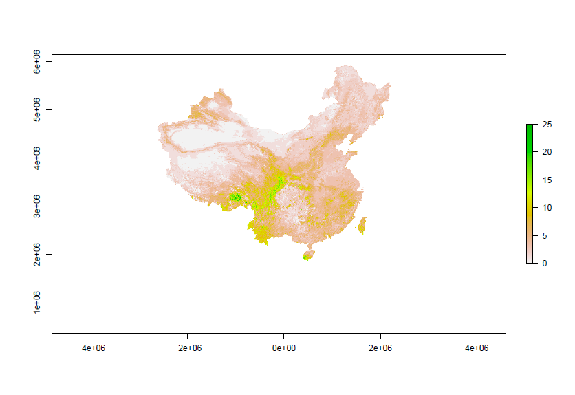
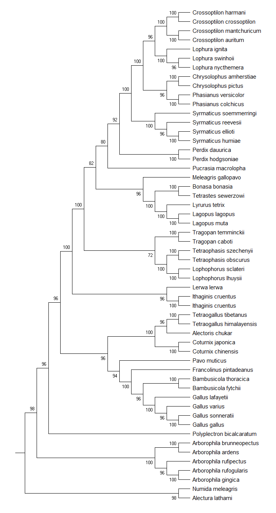
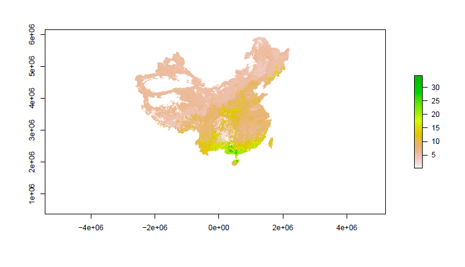
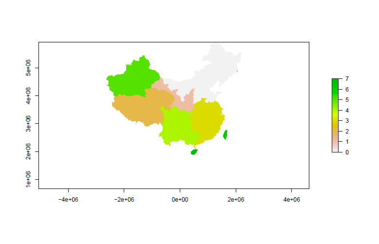
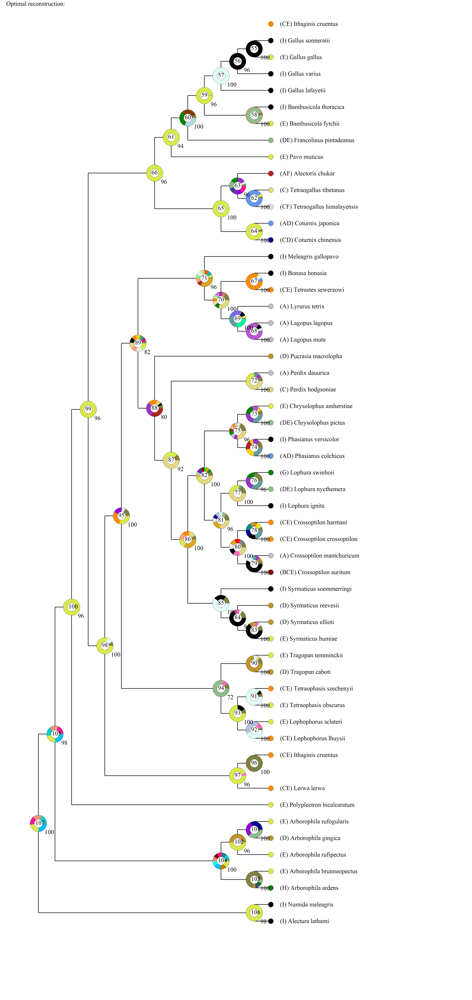

After a whole month’s struggle with my black bear paper (which is still ongoing…), I finally have time to write a post. This week’s find is about my pheasant research in China. Pheasant is a general name for a group of species in the subfamily Phasianinae. Pheasants are usually dimorphism with quite sophisticated males and dim females. They mostly living on the ground and have relatively weak flying ability (but they do can fly!). China is the most pheasants-rich country in the world, there are at least 67 pheasant species distributed, more than half of them are endemic, thus it is a great model system to study the distribution, diversity and evolution of this kind of beautiful large birds.
The questions I am interested in are same as the questions that security staff will ask you when you are entering Peking University’s East Gate: Where are they from? Where are they going? What’s going on to them. But they cannot speak or write down their own story, the long story about evolution. Fortunately, the nature has its own way of writing it. The whole story of evolution was written in the gene of species, using the language of ATCGs. For me, a pheasant researcher, the goal is to read the book of pheasants with the help of “dictionaries” (models, analysis, etc.) developed by other researchers to understand the chapter of a specific question, in my case, where is the origin of pheasant species of China and even the whole Euro-Asian area?
It is at least not hard to see the diversity pattern. Birders including myself are crazy about seeing pheasants. Among Chinese birders, people say “a pheasant is equivalent to ten (other) birds”. And also, pheasants are beautiful; males are easy to recognize and most of them are protected species. Thus there exist enough records of pheasant occurrence for us to map its diversity pattern. It may give us some insight about where they may origin in. Higher diversity may be related to faster speciation, or productivity, human activity and so on. Diversity pattern is of great importance but diversity pattern along may not give us enough information about the origin of the species. What’s more, diversity pattern itself is also an interesting question to be addressed. Why is the pattern like this? However at least we should first see the diversity pattern and have some idea of the region difference for pheasants. The results are got using MaxEnt.

As we can see the highest richness distributes in SW China, and partly Himalayas. There can be several different hypothesis to explain the pattern including environmental variance, productivity, speciation time and human activity. Which is still a problem for pheasant researchers. Back to the things we have, until now, we still did not include any analysis based on molecular biology. Fortunately, there are about 50 species I am studying been sequenced or partially sequenced. I wrote a dynamic vest tool using R to collect fasta data from NCBI. I chose to use whole mito genome to construct the phylogeny tree (which may be not ideal). This time I tried PAUP* to construct a non-time tree. 2 species from other region are selected as outgroup. Now at least we have a tree.

We can add time into it, which is not shown here. So at least, we could see whether there is any relationship between average species age and diversity at a certain place. An observation can be make at first, not diverse sites are relatively younger, see SW China. Exception is southern Himalayas. There is no significant (at least linear until cubic) relationship between average age and richness. But as we can see SW China has high diversity and young age. Does that means there used to be a adaptive radiation at this place?

Then I tried to use S-DIVA, a model used to reconstruct ancestor’s distribution region using phylogeny trees and current range map. This method was based on DIVA. It assumed that a speciation event will divide wide-distributed species’ range into vicariant components. Then optimal ancestor range was find to minimize the number of dispersion and extinction events. I divided China into 8 regions primarily based on province. It is not good but easy to do. A species with >25% of its range within a region is considered “endemic” in this region. Along with the trees I got from PAUP*, S-DIVA works out a reconstruction of ancestor’s distribution tree.


Color of the ring at a given node is the reconstructed ancestor’s distribution region, corresponding to the color in region map (I did my best!). See the quite large amount of rings has yellowish green color like node number 100 and 99 (number within the node ring). That is SW China region. So it seems that there used to be several adaptive radiation event took place at this region, it is probably part of the reason that SW China is the most pheasant-rich region in China and the world.
Again this is only a very primary result that still need a lot of update and refinement. It is a good attempt for me to read the history book with in the gene. Ton’s of questions are still remain unknown about pheasants, about their history, now and the future.
At very last, this shouldn’t be called as “This week’s finds” since actually I haven’t update for at least a month.